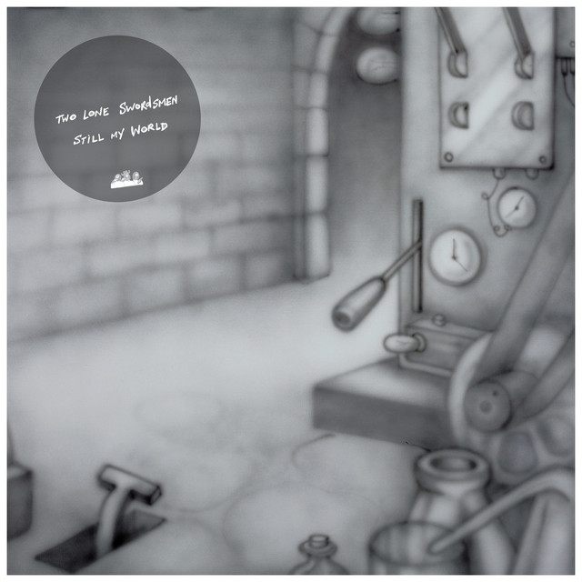

Two Lone Swordsmen - Still



Información del álbum facilitada por discogs.com:
Fecha de lanzamiento: 1999
Géneros: Electronic, Hip Hop
Estilos: Abstract, Techno, Trip Hop, Breaks, Cut-up/DJ
Tracklist:
1.01. The Sugar Hill Suite / Voice Mail 5:36
1.02. The Message (Roots Manuva Remix) (f2eat. Roots Manuva) 5:07
1.03. I Can’t Stop (Wiseguys Remix) (f2eat. The Wiseguys) 4:40
1.04. It’s Nasty (Nightmares On Wax Remix) (f2eat. Nightmares On Wax) 5:59
1.05. Scorpio (Plaid Remix) (f2eat. Plaid) 4:58
1.06. Sugar Hill Groove (Bronx Dogs Remix) (f2eat. Bronx Dogs) 6:50
1.07. Hey Fellas (Red Snapper Remix) (f2eat. Red Snapper) 5:23
1.08. The Adventures Of Grandmaster Flash On The Wheels Of Steel (Freddy Fresh Remix) (f2eat. Freddy Fresh) 6:31
1.09. Pump Me Up (Major Force Remix) (f2eat. Major Force) 8:10
2.01. Break Dance Electric Boogie (Junior Cartier Remix) (f2eat. Junior Cartier) 8:17
2.02. Funk You Up (Two Lone Swordsmen Remix) (f2eat. Two Lone Swordsmen) 4:39
2.03. That’s The Joint (Rae & Christian Remix) (f2eat. Rae & Christian) 5:55
2.04. Simon Says (Deckwrecka Remix) (f2eat. Deckwrecka) 5:18
2.05. Pump Me Up (Mark Seven Remix) (f2eat. Mark Seven) 6:38
2.06. 8th Wonder (Pressure Drop Remix) (f2eat. Pressure Drop) 6:39
2.07. Scorpio (Coldcut Remix) (f2eat. Coldcut) 7:01
2.08. The Adventures Of Grandmaster Flash On The Wheels Of Steel (Scratch Perverts Remix) (f2eat. Scratch Perverts & Killa Kela) 5:45